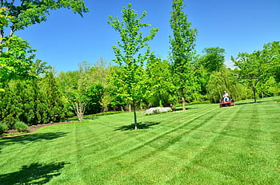

Reviews
Here at Jeremy's Lawn Services customer satisfaction is a must. We pride ourselves here on keeping every customer happy and cutting their lawn to their liking. Whether you want stripes or a diamond pattern, it is never too much for us. Below you will find a multitude of reviews from happy customers voicing their opinion on our company. We are very proud of our work and want to make every cut perfect down to the smallest detail. We hope this sells you on our company, as always, you can reach out to us through our contact page!
Please Look Below to See all of our Fabulous Reviews!
